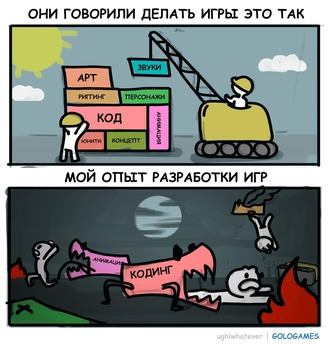

IT - специалисты:от тестировщика до дата-сайентиста
Системный администратор
Отвечает за бесперебойную работу корпоративной сети, рабочих программ и офисной техники.Системный администратор (в народе «айтишник») должен уметь администрировать операционные системы — Linux или Windows, понимать основы построения компьютерных сетей и быстро разбираться в работе профессионального программного обеспечения.
Пример задачи: Составить аварийный план и выполнить его: найти причину отказа сервера, исправить ее, развернуть бэкапы и восстановить работу инфраструктуры компании как можно быстрее.
Тестировщик

Прежде всего, тестировщик оценивает программу с точки зрения корректности работы: все ли функции исправны, нет ли багов. Тестировщики проверяют работу кода в разных ситуациях использования и находят в нем ошибки и уязвимые места. Помимо технических навыков, тестировщику нужны и софт-скиллы: умение давать обратную связь разработчикам, писать отчеты, которые помогут им воспроизвести и устранить проблему.
Пример задачи:Проверить, как будет работать интернет-сервис, когда им будут пользоваться сотни тысяч пользователей, то есть провести нагрузочное тестирование: замерить скорость работы сервиса под высокой нагрузкой и найти «бутылочное горлышко», замедляющее работу.
«Белый» хакер
Проверяет на прочность информационную безопасность отдельных программ, сервисов или целых компаний, чтобы рассказать о проблемах их владельцам.Это незаменимый специалист по информационной безопасности, который знает, как совершаются преступления в сети и как от них защититься.
Пример задачи: Проверить безопасность сетевой инфраструктуры компании: обследовать сайт и корпоративные сервисы при помощи специализированного ПО, найти уязвимости и составить подробный отчет
Мобильный разработчик
Мобильный разработчик создает программы для мобильных устройств: телефонов, планшетов, часов и так далее. Его главная задача — сделать удобное и функциональное приложение.Сегодня мобильные разработчики очень востребованы — и неудивительно, ведь мобильные приложения нужны всем, от магазинов и банков до университетов и государственных органов.
Пример задачи: Разработка мобильного приложения для крупного интернет-магазина или сети кафе на базе графического прототипа, который утвердил заказчик.
Разработчик игр
Мобильный разработчик создает программы для мобильных устройств: телефонов, планшетов, часов и так далее. Его главная задача — сделать удобное и функциональное приложение.Сегодня мобильные разработчики очень востребованы — и неудивительно, ведь мобильные приложения нужны всем, от магазинов и банков до университетов и государственных органов.
Пример задачи: Разработка мобильного приложения для крупного интернет-магазина или сети кафе на базе графического прототипа, который утвердил заказчик.
Frontend-разработчик
Создает видимую часть сайтов: отвечает за работу меню, кнопок, форм и других элементов интерфейса, с которыми взаимодействует пользователь. Frontend-разработчик одновременно техническая и творческая профессия: его навыки позволяют визуализировать свои или дизайнерские идеи.
Пример задачи: Сделать для клиента сайт-визитку или создать удобную форму оплаты для интернет-магазина
Backend-разработчик
Занят скрытой от простого пользователя стороной программного обеспечения — разрабатывает серверную часть сайта или приложения, работает с базами данных. Например, делает так, что ваш заказ в интернет-магазине сохраняется, передается на склад и отслеживается через личный кабинет на сайте.Тоже нужны везде, где есть приложения и сайты. Для работы на начальном уровне необходимо разбираться в базах данных и знать хотя бы один язык программирования, например PHP, Python, С#.
Пример задачи: Сделать так, чтобы при регистрации данные пользователя попали в нужную базу.
Fullstack-разработчик
Мастер на все руки, который может работать и с пользовательским, и с серверным функционалом сайта или приложения. Такой специалист одинаково хорошо знает, как построить «здание», чтобы оно не развалилось, и как сочетать красоту с функциональностью.Такие программисты более востребованы, чем те, что специализируются только на frontend- или backend-разработке. Ведь они совмещают в себе функции сразу двух работников. Быть fullstack-разработчиком сложнее и ответственнее, чем работать только с одной стороной сайта.
Пример задачи: разработать небольшое веб-приложение, начиная с функциональности форм и кнопок, заканчивая серверной логикой и хранением данных.
DevOps-инженер
Development Operations помогает разработчикам эффективно взаимодействовать с другими IT-специалистами. Например, программисты и тестировщики отвечают за Development, а администраторы — за Operations. И когда специалист вовлечён не только в непосредственную разработку, но еще и в процесс деплоя и эксплуатации системы — это DevOps.DevOps чаще всего становятся разработчики или системные администраторы. Первые специализируются на работе с программным обеспечением, а вторые — на безопасности и архитектуре сетей.
Пример задачи: Автоматизировать обновления IT-продукта, настроить проверку на ошибки и публикацию по нажатию одной кнопки.
Системный аналитик
Разбирается, чего хочет заказчик или пользователь, и передает эту информацию разработчику программы. Он также должен знать, какие возможности есть у IT-отдела, и уметь объяснять заказчику, какие из его желаний невыполнимы.Системный аналитик должен уметь анализировать процессы и требования, а затем на основе полученных данных формализовать их, то есть приводить к непротиворечивому, логичному виду, понятному для разработчика.
Пример задачи: расспросить сотрудников заказчика, собрать их требования к будущему продукту, а затем разработать и согласовать техническое задание для программистов.
Data Scientist
Использует данные, чтобы решить конкретную задачу бизнеса. Проводит глубокий анализ данных, строит модели, на которых затем проверяет различные гипотез. Они помогают делать реальные прорывы в бизнесе или науке.Для работы Data Scientist использует базы данных и Python. Но главное — знание математики, аналитический ум и глубокое понимание области исследования.
Пример задачи: На основе данных о том, что смотрели пользователи онлайн-кинотеатра выстроить рекомендательную систему, которая будет предлагать им похожие фильмы, и это увеличит выручку сервиса в 5 раз.
ML-инженер
Инженер в сфере Machine Learning (машинного обучения) применяет на практике модели, придуманные Data Scientist. Он создает программы, которые обучаются на заданном наборе информации, а затем могут самостоятельно анализировать данные и делать на их основе выводы и прогнозы.Стать ML-инженером с нуля сложно, нужны как минимум хорошая математическая база и опыт разработки. Специалист по машинному обучению должен разбираться в программировании, математике, статистике. Владеть стеком технологий, например знать языки программирования Python, Scala, Java, C++.
Пример задачи: Вписать алгоритм для распознавания почерка и оцифровки написанного от руки текста в приложение, дать ему практическое применение, а потом кропотливо отлаживать, чтобы оно правильно работало.